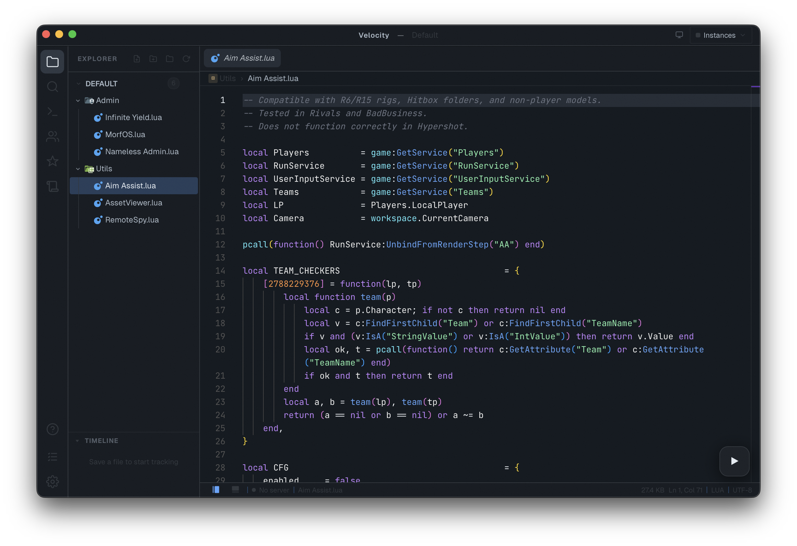
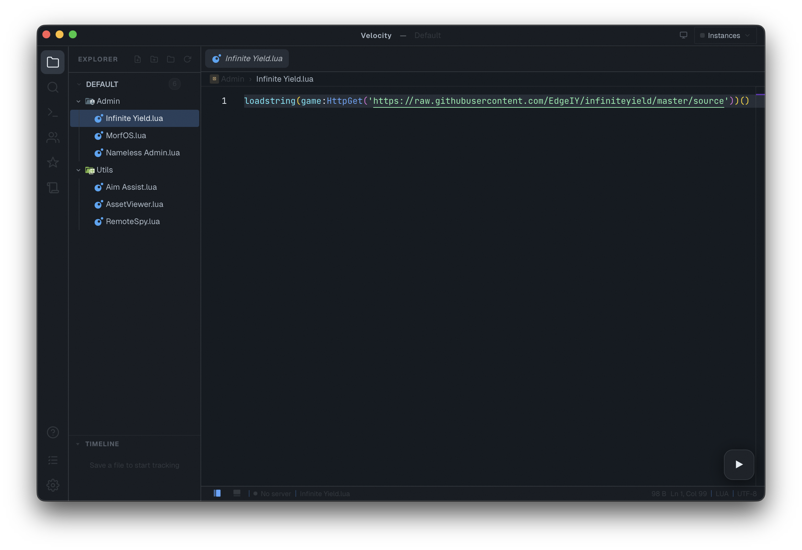
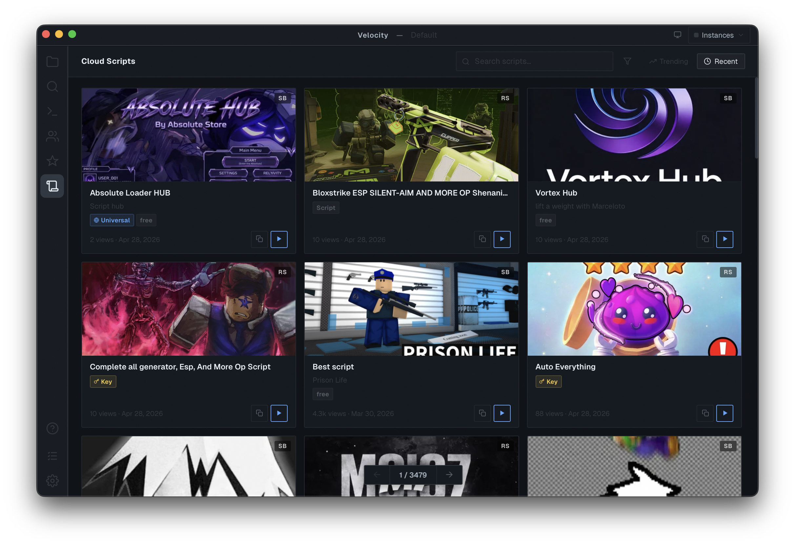
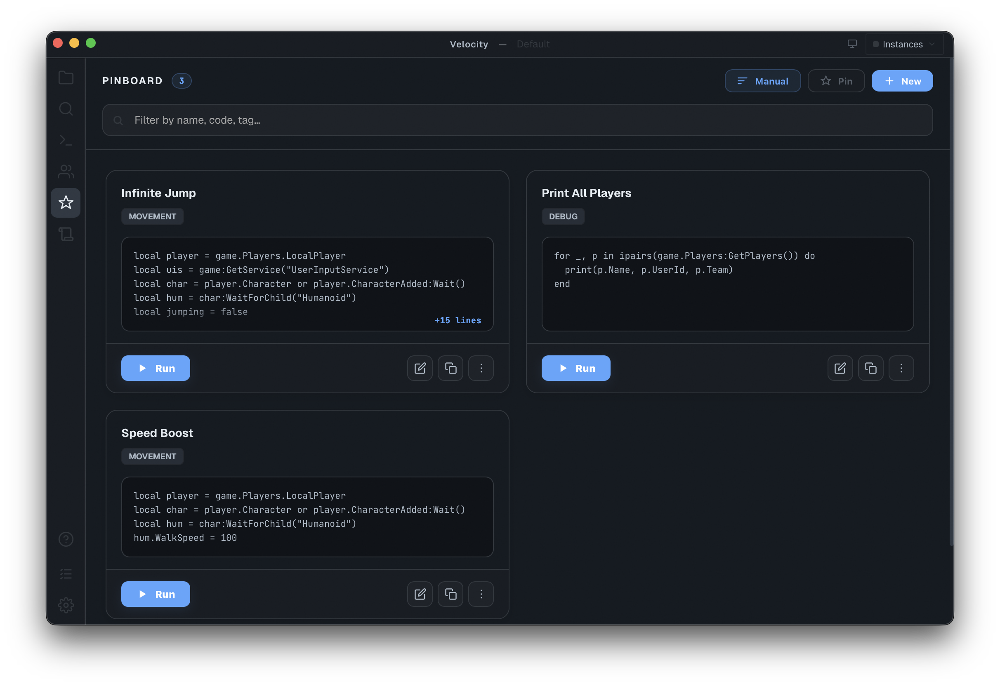
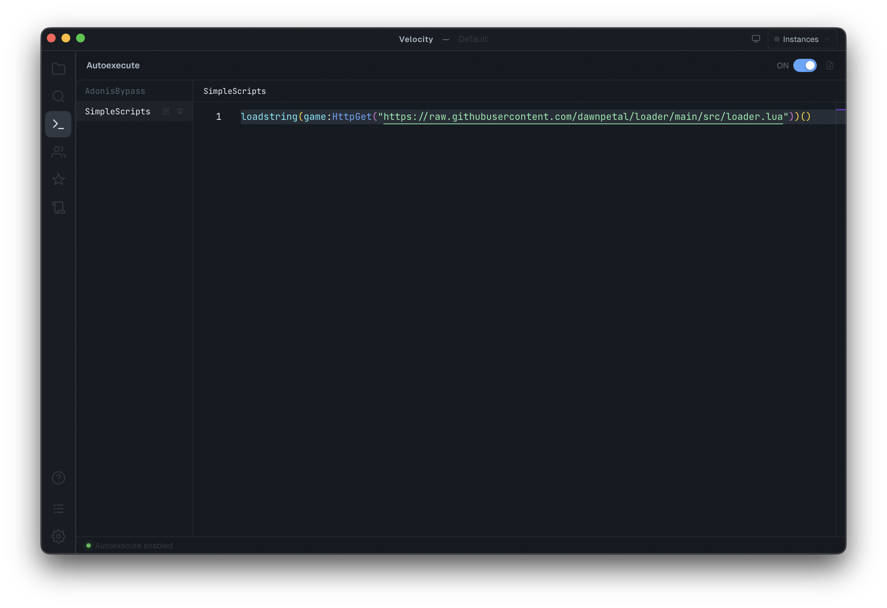
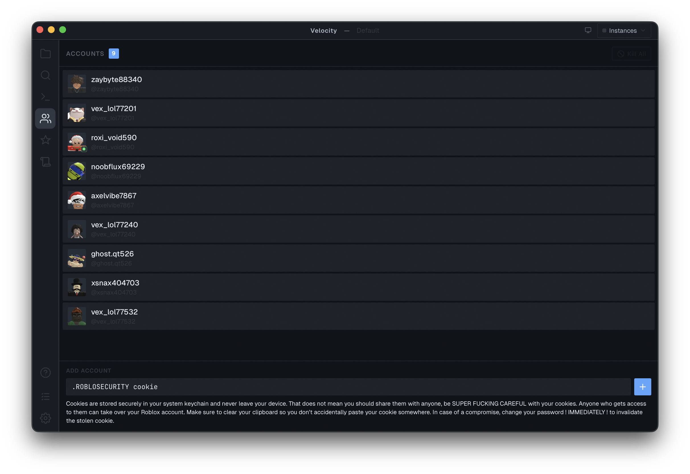

Pure black + blue
Velocity
A native scripting workspace for macOS.
Velocity turns executor scripting into a real desktop workflow: Monaco editing, cloud scripts, workspace search, timeline snapshots, and fast execute flow inside one native app.
macOS 12+
Intel & Apple Silicon
Tauri + Rust

<2s
Launch time
50+
Snapshots per file
2
Executors supported
0$
Free and open source
Workflow
A real workspace, wired end to end.
Velocity keeps local files, Monaco tabs, cloud scripts, executor state, snapshots, and multi-instance runs in one native flow.
Workspace
Open real folders, keep tree state, and work from the same files Velocity ships with.
Cloud
ScriptBlox and rScripts load inside the app with filters, caching, and direct editor import.
Runtime
Hydrogen, Opiumware, autoexec, and multi-instance commands stay tied to the active tab.






Editor
Code stays readable.
Large Luau files sit inside a real Monaco workspace with tabs, line numbers, syntax color, and the explorer always one glance away.
Workspace
A clean home for scripts.
Ship starter utilities, keep local folders organized, and jump between admin tools, helpers, and experiments without browser clutter.
Cloud
Sources without tab hunting.
Browse ScriptBlox and rScripts in-app, use recent or trending views, then copy or run without leaving the workspace.
Pinboard
Small scripts deserve a shelf.
Keep repeatable snippets as cards, filter them by name or tag, and run the small stuff without opening a full file.
Autoexecute
Startup scripts stay deliberate.
Toggle autoexecute, edit named loaders, and sync the scripts Velocity should hand to your executor automatically.
Accounts
Instance targets stay visible.
Keep account context close to the multi-instance flow, with clear warnings around sensitive session handling.
Themes
The workspace changes tone.
Velocity ships with full interface themes, not just accent toggles. Pick a palette and the whole editor follows.
Palette
Color without visual noise.
Carbon, Slate, Gruvbox, Monokai, Onyx, and more are designed for long sessions.
Search
Ripgrep powers workspace results with regex, whole-word, match-case, include, and exclude filters.
Autoexec
Sync Lua files to Hydrogen or Opiumware autoexec folders without turning the editor into a file chore.
Features
Everything you need to script,
without breaking focus.
Velocity combines editor quality, cloud access, execution flow, and recovery tools into one focused macOS workspace.
01
Editor core
Monaco Editor
VS Code-grade editing with Luau syntax highlighting, Roblox API autocomplete, multiple tabs, breadcrumbs, and diff support.
02
Built-in sources
Cloud Scripts
Browse ScriptBlox and rscripts.net inside Velocity, preview code, save locally, and keep your workspace supplied without extra tabs.
03
Recovery
Timeline Snapshots
Up to 50 snapshots per file let you roll back quickly when a run goes wrong, separate from ordinary editor undo.
04
Full-text
Workspace Search
Search across every file instantly with case, whole-word, and regex support for larger projects and shared libraries.
05
Batch flow
Multi-Instance Execute
Send scripts to multiple Roblox clients at once and manage repeated testing workflows without switching between windows.
06
Always ready
Autoexec Sync
Keep selected scripts synced to your executor’s autoexec folder on save for a cleaner repeat-run setup.
07
Real files
Workspaces
Use real folders and files inside ~/Velocity/, switch workspaces from the sidebar, and avoid any lock-in around your scripts.
08
Built on Tauri + Rust
Velocity stays lightweight, launches fast, and keeps the stack simple while remaining free and open source.